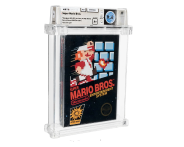

Un coleccionista encuentra una copia de Super Mario Bros. precintada en su ático y la vende por más de 2 millones de euros.
Nintendo
Hace 12 minutos | Alberto Vázquez | Sin comentarios

Un coleccionista encuentra una copia de Super Mario Bros. precintada en su ático y la vende por más de 2 millones de euros.
Sega confirma el lanzamiento de una consola retro en miniatura con todos sus clásicos: Mega Drive Nano.
Capcom anuncia una colaboración con Lego para recrear niveles clásicos de Mega Man en bloques.